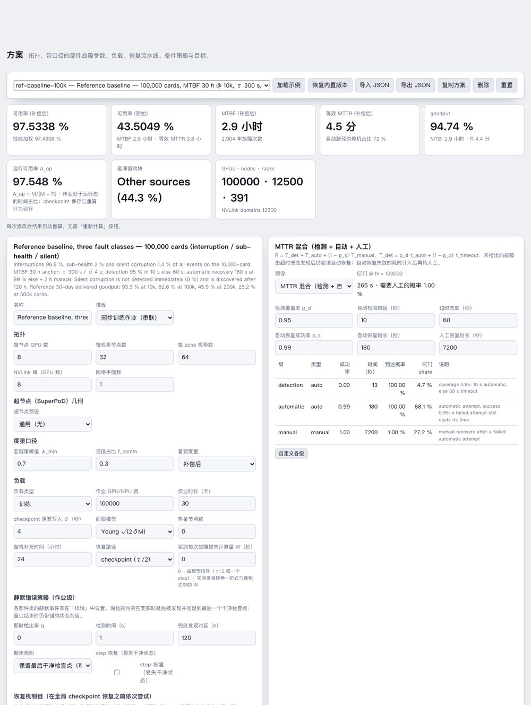
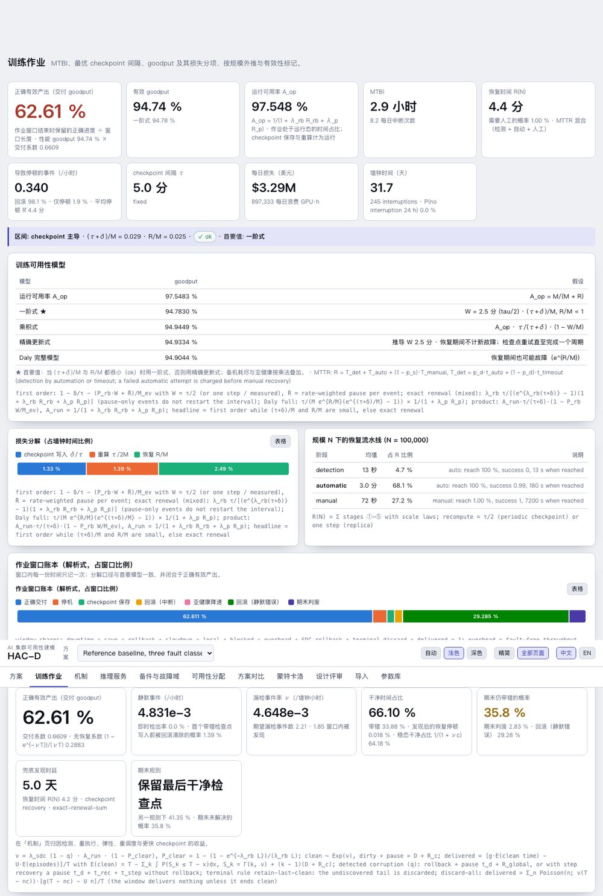
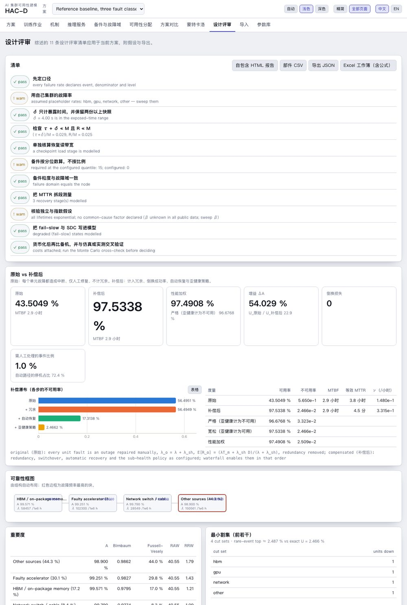

HAC-D 用户手册
1. HAC-D 是什么
HAC-D 把集群描述（拓扑、带故障与修复参数的部件类、负载、恢复策略、故障管理机制）转换为可用率、平均中断间隔、恢复时间、goodput 与成本，并把目标反向分配到子系统和机制。它以综述章节《AI 集群可靠性建模》为依据，并与一个独立的参考引擎（经审核的单训练作业 30 天离散事件仿真器）交叉校核。
1.1 原则
- 每个数字都带公式与口径。故障率是「某事件类 / 某分母 / 某层级」（例如作业级的每卡·小时硬中断）。不同事件类的量永不相加。
- 解析式优先，并带有效性标记。一阶 goodput 公式检查 τ + δ ≪ M 与 R ≪ M；标记触发时首要值切换为精确更新式。
- 假设不成立时转蒙特卡洛。非指数寿命、相关故障、有限备件池、有限窗口与静默错误走仿真；解析式结果仍显示并带差值徽标。
- 每个参数都有出处。参数库记录与方案输入带来源、年份与置信（measured、paper-reported、vendor、derived、assumed、scan-level）。
1.2 架构
| 包 | 作用 | 说明 |
|---|---|---|
packages/core | 纯 TypeScript 数值核心 | 单位、数学、RBD、CTMC、修复路径、分级恢复、checkpoint 与 goodput 模型、静默错误交付、机制链与机制库、规划器、备件、MTTR、分配、敏感性、成本、蒙特卡洛、方案 schema 与示例、参数库（635 条） |
apps/web | Vite + React 静态应用 | 中英双语、浅 / 深色，计算在 Web Worker 中，共 11 个页面 |
packages/cli | 命令行 hacd | 与 Web 应用同一套函数，输出表格或 JSON |
packages/mcp | MCP 服务 | 面向智能体的 17 个工具（评估、对比、分配、龙卷风、仿真、参数库、Excel、机制、账本、规划器） |
packages/importers | Excel 导入 / 导出 | 公式方法识别、拓扑提取、对账、含公式的工作簿导出 |
2. 快速开始
npm install # Node ≥ 20，npm workspaces npm run dev # Web 应用 http://localhost:5173 npm test # 358 个核心测试 + 29 个导入器测试（含黄金向量） node --import tsx packages/cli/src/main.ts examples # 命令行 claude mcp add hacd -- node --import tsx packages/mcp/src/server.ts # MCP 服务
Web 应用中：「方案」→ 加载示例（九个内置方案，见 §16.3）→ 其他页面在每次编辑后自动重算，没有「重新计算」步骤。页眉有语言（中文 / EN）与主题（自动 / 浅色 / 深色）开关。方案保存在浏览器本地存储；导出 JSON 保存一个方案，导入 JSON 读入，恢复内置 重置示例。
精简模式。应用默认只显示训练可用性核心（方案、训练作业、机制、可用性分配、导入、参数库）；页眉的全部页面开关可加回推理服务、备件与故障域、方案对比、蒙特卡洛与设计评审，选择会被记住。本手册的截图展示全部页面；所有功能在命令行与 MCP 中保持可用。ReMAP。scripts/remap-bridge.ts 在 HAC-D 方案上运行 ReMAP 内嵌的专家引擎并与解析式对比，hacd import-remap 把 ReMAP 或参考工具的事件库转为方案（见 docs/REMAP_INTEGRATION.md）。
3. 概念与口径
3.1 度量
| 度量 | 定义 | 页面 |
|---|---|---|
| 可用率 A（补偿后） | 系统结构处于可用态的稳态概率，计入冗余、倒换成功率、自动恢复与亚健康策略 | 方案、设计评审 |
| 原始可用率 | 同一结构，但每个单元故障都算停机、仅人工修复、不计冗余；补偿瀑布逐步加入各机制 | 设计评审 |
| 严格 / 宽松 / 性能加权 | 亚健康计为不可用 / 计为可用 / 按性能因子加权 | 设计评审 |
| MTBF、等效 MTTR | 由稳态故障频率得 A / ν_sys 与 (1 − A) / ν_sys | 方案 |
| MTBI | 作业平均中断间隔 1 / Σ nᵢλᵢ（加上已检出亚健康单元的隔离） | 训练作业 |
| 恢复时间 R(N) | 从中断到恢复有效训练的平均时间，不含重算；流水线、分级或混合 | 训练作业 |
| 运行可用率 A_op | 运行时间占比 1 / (1 + λ_rb R_rb + λ_p R_p)（保存与重算计为运行） | 训练作业、方案对比 |
| goodput（一阶、精确更新、乘积、Daly） | 周期 checkpoint 下单位墙钟时间的有效计算，§13.5 | 训练作业 |
| 有效 goodput | 首要 goodput × (1 − P_blocked) × φ_job × (1 − ℓ_local)：计入备机、亚健康与弹性域损失 | 训练作业、方案对比 |
| 正确有效产出（交付 goodput） | 作业窗口结束时保留的正确进度 ÷ 窗口长度，扣除静默错误回滚与期末判废 | 训练作业、可用性分配、机制 |
| 容量可用率（推理） | N+k 池中至少所需副本数可用的概率 | 推理服务 |
3.2 故障类别
每个部件类可建模三种表现，各有自己的口径与处理方式：
- 中断：单元停止；作业被检测为停机，经机制链与全局 checkpoint 恢复，除非由不回滚的机制处理，否则回退到最近 checkpoint。
- 亚健康（fail-slow）：单元以性能因子 φ 持续运行一段时间；同步作业被拖慢（掉队者定律）；策略为容忍或隔离（已检出的单元先保存进度再切出）。
- 静默错误（SDC）：状态被污染而无中断；即时检测捕获一部分，漏检的污染在兜底时延后被发现并回退到最后一个干净 checkpoint；窗口结束时仍带错的状态判废。
3.3 置信与出处
每个故障率或时间可带 provenance（来源、机构、年份、URL、算式）与置信标签。参数库（§12.2）使用同样的标签；参考示例把借用的占比与目标值标为 assumed。规划器（§6.3）对假设参数降额；可用性分配页按置信加权可行性。
4. 方案页

4.1 拓扑与超节点预设
每节点 GPU 数、每柜节点数、每区机柜数、scale-up 域大小与网络平面数决定计数范围（按 gpu、节点、机柜、区或固定数）。超节点预设（CloudMatrix384 或参数化的 Atlas 950）加入超节点几何：每节点 NPU 数、计算与通信机柜数、UB 子平面数、每子平面 L2 芯片数与端口数、每节点 L1 芯片数与链路数、每链路光模块数。部件类可按超节点、通信机柜、L1 或 L2 交换芯片、子平面、光链路或光模块计数。CloudMatrix384 的推导计数为 48 节点 × 8 NPU、7 个子平面 × 16 片 L2、5,376 条光链路；公开资料未给出的字段标为 assumed。
4.2 部件类
| 字段 | 含义 |
|---|---|
| 计数规则 | 每 gpu / 节点 / 机柜 / 区 / 超节点范围内的单元数，或固定数量 |
| 故障率与单位 | 每小时、每百万小时、FIT、AFR、MTBF 小时等；集群 MTBF 锚点把「N 个单元、集群 MTBF 为 M」换算为单元故障率 |
| 修复路径 | 人工 MTTR，或双路径：自动覆盖率 c、成功率 s、自动 MTTR T_a、人工 MTTR T_m（E[R] = c T_a + (1 − c s) T_m） |
| 冗余 | 串联、并联、k-of-n、备用；倒换成功率、每次倒换的短暂停机、倒换失败后的恢复时间 |
| 共因 | β 因子及其波及的故障域（节点、机柜、超节点、子平面等） |
| 亚健康 | 进入率或稳态概率、持续时间、性能 φ、升级倍数、容忍 / 隔离策略、检测概率与时延 |
| 静默错误 | 每单元·小时的静默事件率（作业级策略见 §4.4） |
| 机制适用比例 | 本类中断中可由重执行、进程重调度与 DP 弹性处理的比例（参考目录逐事件标志按来源汇总） |
| 婴儿期、lemon、Weibull 形状 | 供蒙特卡洛作业仿真使用 |
4.3 负载与恢复
训练：作业 GPU / NPU 数（或使用的超节点数）、时长、暴露的 checkpoint 保存时间 δ、间隔模型（Young、Daly 三项、Daly 精确、Saxena）或固定间隔、热备节点与补充时间、恢复路径（checkpoint τ/2 或副本一步）、实测每次故障丢失计算量 W。推理：所需副本数、每副本 GPU 数（可以一个超节点为单位）、备用副本、容量目标、SLO 窗口。
恢复：带规模律的流水线（预设 baseline-timeout-manual、automated-probe-standby、trainmover-8192-restart、elastic-replica）、带成功率的分级恢复（mindcluster-a3、generic-auto-restart 或自定义），或 MTTR 混合 R = T_det + T_auto + (1 − p_s) T_manual，其中 T_det = p_d t_auto + (1 − p_d) t_timeout。
4.4 静默错误策略与恢复机制链
作业级：即时检出率 q 与检测时间、兜底发现时延 D（参考基线为 120 h）、可选的 step 恢复（最多重做 t_step，用 t_rec 恢复），以及窗口的期末规则：保留最后干净检查点（经审核的参考引擎，默认）或期末未解决则整窗口清零（参考工具 V4 与 ReMAP 历史模型的 delivery 口径；两者是不同指标，训练作业页同时给出两个值）。恢复机制链可启用重执行（不回滚）、DP 域弹性（不回滚；n 个域中一个域不可用 t_el，全局同步 t_sync）与进程重调度（回滚），各带成功率与成功 / 失败耗时；梯级顺序控件设定含检测时延的梯级的尝试顺序（↑ 提前一级；预测与网络切换始终在前），之后才是全局 checkpoint 恢复。每个部件类还提供由事件计数估计故障率：去重事件数 ÷（单元数 × 观测小时）给出故障率、FIT、MTBF 与精确 Garwood 区间（零事件时给单侧上界），一键写入该类作为实测故障率并记录推导。
4.5 度量、目标、成本、JSON
亚健康阈值 φ_min（默认 0.7，低于则计为不可用）、用于网络平面损失的通信占比、首要度量（补偿后 / 原始）、goodput 与可用率目标、每 GPU 小时价格。页底的方案 JSON 编辑器显示完整文档（schema 见 docs/scenario.schema.json）。
5. 训练作业页

5.1 怎样读这一页
- 方案含静默错误时，正确有效产出是首要卡片；有效 goodput（性能）与交付系数显示在旁边。
- 区间行：(τ + δ)/M 与 R/M 及有效性徽标；首要模型（标记正常时为一阶式，否则为精确更新式）。
- 模型表：A_op、一阶式 ★、乘积式、精确更新式（含推导 W）、Daly 完整模型，各附假设。
- 窗口账本：正确交付 + 停机 + 保存 + 回滚 + 降速 + 弹性域损失 + 备机 + 静默回滚 + 期末判废 = 1（解析式，按首要模型分解）。
- 各部件类的机制链：适用比例、P(重执行 / 弹性 / 进程 / 全局)、回滚概率、平均停顿、每事件域损失。
- 规模外推：1/N 定律，逐行应用机制链、仅停顿事件与静默错误窗口；一阶标记触发处带 caution / invalid 徽标；超节点预设下多一列超节点数。
5.2 窗口账本
5.3 窗口内的静默错误
6. 机制页

6.1 机制库
参考目录的 12 项机制加上根据文献新增的 7 项（v3.2），各带其变化、前置条件、失败路径、参数置信、规划器使用的工作量分数（1–5），以及（对无故障时也消耗吞吐的方法）乘到 goodput 上的无故障开销。16 项有方案变换；3 项为说明性（已在基线中或不得重复计收益）。每次中断的机制链顺序：预测迁移 → 网络切换 → 重执行 → 热替换 → 弹性 → 进程重调度 → 全局 checkpoint 恢复 → 人工。
| ID | 机制 | 方案变化（参考策略的目标值） | 工作量 |
|---|---|---|---|
| D-HARD | 中断检测 / 超时兜底 | 混合检测 95 % 在 10 s → 99.9 % 在 1 s | 2 |
| D-SLOW | 亚健康检测 | 每个亚健康类 95 % 在 5 min → 99 % 在 30 s | 3 |
| D-SDC | 静默即时检测 | 检出率 0 → 95 %，1 s；回退到最近 checkpoint + 全局恢复 | 5 |
| R-SDC | 干净 step 状态恢复（依赖 D-SDC） | 已检出的静默最多重做 1 s、1 s 恢复 | 4 |
| R-REPLAY | 通信 / 算子重执行 | 90 % 在 5 s，不回滚；失败 10 s | 2 |
| R-PROCESS | 进程 / Pod 重调度 | 95 % 在 60 s，回滚；失败 120 s | 3 |
| R-ELASTIC | DP 域弹性 | 98 %；50 域中一个域不可用 180 s；同步 1 s；不回滚；失败 120 s | 5 |
| R-CKPT、R-MANUAL | 全局 checkpoint 恢复、人工恢复 | 基线（3 min、99 %，失败加 2 h 人工） | — |
| C-FAST | 更快的 checkpoint | τ 300 s / δ 4 s → 60 s / 1 s | 3 |
| H-PROTECT | 既有光路 / 供电保护 | 说明性：已在残余故障率中 | — |
| H-RELIABILITY | 降低硬件故障率 | 可选的故障率下降比例（不预设） | 4 |
| P-PREDICT | 故障预测与预先迁移 | 召回 50 % 的即将发生的持久性故障，变为计划内迁移（180 s、不回滚、无检测时延）；精度 80 %，误报增加停顿 | 3 |
| R-NETFAIL | 容错集合通信 / 多网卡切换 | 网络类故障在集合通信内吸收：95 % 在 2 s 内，不回滚 | 3 |
| R-HOTSWAP | 故障卡热替换 | 卡 / 服务器故障 180 s 内由备用设备替换，成功率 90 %，不回滚 | 4 |
| C-MEM | 内存 / 分层 checkpoint | δ 0.5 s、每 60 s 一次，全局恢复 −60 s（内存加载）；1 % 开销 | 3 |
| D-SDC-DMR | 双模冗余 / 在线完整性校验 | 静默检出率 99.9 %、1 s，吞吐开销 8 % | 4 |
| H-LEMON | 问题节点剔除 | 中断率 × (1 − 0.1 × 0.7) | 2 |
| H-SWEEP | 节点离线巡检 | 亚健康进入率 × 0.5、持续时间 × 0.5 | 2 |
6.2 归因
本页有自己的方案选择器，默认为 54 条事件的参考目录（逐事件机制标志可精确复现组合；按比例声明适用性的方案会显示提示）；其他页面仍使用当前方案。选择参与的机制与价值函数（正确有效产出、有效 goodput 或 A_op），按归因：先把所选机制从方案中剥离（基线），再用解析式评估全部 2ⁿ 个组合，报告单项收益（单独启用）、末位加入收益（加在其余全部之上）与精确 Shapley 贡献（合计等于组合收益）。替代型机制（重执行、弹性、进程重调度）收益递减；互补型机制（检测 + step 恢复）只有一起启用才有收益。价值函数只评估每个组合的训练部分（跳过框图结构、重要度与割集），54 条事件目录上 10 项机制约一秒完成；按钮显示已评估的组合数，计算线程一次只运行一项任务（归因与规划排队），取消会重启计算线程。
6.3 按目标规划
设定目标后按规划：每个组合按名义参数与降额参数（检出率 −5 点、成功率 −8 点、时间 ×1.5）各评估一次，两者都达标才算可行。卡片报告工作量最低的可行组合、出现在每个可行组合中的机制（必要机制）、工作量–价值 Pareto 前沿、在该组合之上的静默检出率 × 自动恢复时间扫描，以及（启用时）用窗口账本仿真校核的 P(窗口 ≥ 目标) 与置信水平：Wilson 下界达到置信水平为支持，上界达不到为未达到，否则不确定。每个组合都带无故障上界（仅检查点保存就把有限窗口的上限压到占空比 τ/(τ+δ) 附近）；目标高于最优上界时报告"已证明不可达"而非"未找到"。工作量分数与目标参数可在机制库表中修改。
7. 可用性分配页

7.1 方法
| 方法 | 规则 | 适用情形 |
|---|---|---|
| 等分 | λᵢ* = λ*/m | 对子系统没有信息 |
| ARINC | λᵢ* ∝ 当前 λᵢ | 信任当前比例，所有类按同一倍数改进 |
| AGREE | Rᵢ = 1 − (1 − R*^{nᵢ/N}) / wᵢ，复杂度 × 重要度 × 工作时间 | 已知模块数与重要度权重 |
| 可改进性 | 按可改进程度加权（假设值权重更大） | 置信参差不齐 |
| 最小努力（Albert） | 只把最差的类拉到同一水平 | 少数类占主导 |
| 成本最优 | 在 Σ λᵢ = λ* 下最小化 Σ aᵢ (λᵢ⁰/λᵢ)^{bᵢ}（拉格朗日） | 各类有成本曲线 |
各方法只在各类之间的分配上不同；作业级预算卡片与方法无关。当各类的单元数、重要度与可改进性权重都相同时，等分、AGREE 与可改进性加权结果一致（页面会提示）；预算已满足时最小努力与成本最优保持当前故障率。页面上的部件类权重表可设置重要度、可改进性权重、成本系数与固定类；数值保存在方案中。
7.2 goodput 预算与目标口径
在 Young 间隔下一阶损失为 L = √(2δ/M) + R/M。给定目标 G*，本页求解所需 MTBI（保持 R）、所需恢复时间（保持 λ）与均衡分配，再把所需中断率分配给各类、所需恢复时间分配给各阶段。有余量时表格显示各类可以恶化到何种程度（改进倍数小于 1）。
正确交付口径（方案含静默错误时为默认）把正确交付目标 G_d 换算为有效目标与中断项目标（÷ 交付系数 ÷ 亚健康系数）；先检查仅靠硬件能否达到（故障率 → 0 且静默策略不变），若不能，则报告达到目标所需的最小即时检出率 q* 与最长兜底时延 D*，并以检出率提高到 q* 计算预算。
7.3 算例：5 万卡达到 90 %
| 量 | 值 |
|---|---|
| 当前正确有效产出（q = 0，D = 120 h） | 76.7 % |
| 仅靠硬件可达 | 77.9 % |
| 所需即时检出率（硬件不变） | 71.5 % |
| 或所需兜底时延（q = 0） | 32 h |
| 采用参考的 95 % 检出率后 | 95.4 % |
| 此时允许的中断率（ARINC，保持 R） | ×4，MTBI ≥ 1.49 h |
| 或允许的恢复时间（保持 λ） | ≤ 24 min |
窗口账本损失预算（正确交付口径）：允许损失 (1 − G*) × 窗口按九个账本项拆分——按当前账本比例、在有损失的项上均分、或自定义权重（ReMAP 的停机 / 保存 / 回滚 / 判废 / 降速 / 域损失 25 / 20 / 35 / 10 / 5 / 5 % 是一种选择）——逐项给出当前、允许、超出以及驱动该项的杠杆。拆分是记账目标，不证明各项能独立达到。
8. 推理服务、备件与故障域
推理服务：N+k 副本池，一个副本 = 一个节点、机柜或超节点；副本故障率 λ_r = 副本范围内及以下各类之和，MTTR_r 按率加权，u_r = λ_r MTTR_r / (1 + λ_r MTTR_r)，有服务可用率 1 − u_r^{n+k}，容量可用率 Σ_{j≤k} C(n+k, j) u_r^j (1 − u_r)^{n+k−j}，达到目标所需的 k、每日副本故障数与空闲备用 GPU 小时。超节点预设下本页以超节点数给出 10 万 / 20 万 / 50 万 NPU 集群的规模（CloudMatrix384 类比故障率：261 / 521 / 1,303 个超节点，99.9 % 容量可用率需 k* = 9 / 14 / 27 个备用）。
备件与故障域：按二项分位数的热备（ByteRobust）、按泊松与补充时间的热备（Meta）、维修流水线中的单元与作业期内的更换数、节点 MTBF × MTTR 的所需备件图，以及与故障域一致的备件粒度。
9. 方案对比页

龙卷风图把每个部件故障率、恢复时间、checkpoint δ、热备数与共因 β 各减半与加倍，对 goodput、正确交付、可用率、每日损失或 MTBI 作敏感性分析。参数敏感性用它；离散机制的价值用机制页。
10. 蒙特卡洛页

窗口账本（默认）：对一个作业窗口做离散事件仿真，含三类故障、机制链（按适用比例做伯努利抽样）、亚健康检测与隔离、静默错误（即时检测、step 恢复、兜底发现、干净 checkpoint 保留、期末判废）与 checkpoint 批处理；与经审核的参考引擎同一口径，每小时只记一次。作业仿真：单元级蒙特卡洛，含 Weibull / 对数正态寿命与修复、婴儿期、lemon 单元、带波及范围的 β 共因、有限热备池、冗余组与 fail-slow。两者都与解析式对比并在不一致时提示；不一致时以仿真为准。均值带 Student-t 95 % 半宽与 type-7 分位数；P(正确交付 ≥ 目标) 与期末未解决概率带 Wilson 95 % 区间，区间只覆盖抽样误差。
11. 设计评审页

| # | 清单项（综述设计评审） |
|---|---|
| 1 | 先定口径 |
| 2 | 用自己集群的故障率 |
| 3 | δ 只计暴露时间，并保留两份以上快照 |
| 4 | 检查 τ + δ ≪ M 且 R ≪ M |
| 5 | 单独核算恢复读带宽 |
| 6 | 备件按分位数算，不按比例 |
| 7 | 备件粒度与故障域一致 |
| 8 | 把 MTTR 拆段测量 |
| 9 | 核验独立与指数假设 |
| 10 | 把 fail-slow 与 SDC 写进模型 |
| 11 | 货币化后再比备机，并与仿真或实测交叉验证 |
重要度（Birnbaum、Fussell-Vesely、RAW、RRW）对各块排序；Excel 导出生成带公式的工作簿（Inputs、Structure、Results、Formulas），可脱离 HAC-D 独立重算。
12. 导入与参数库

12.1 Excel 导入
公式被识别为 18 种方法标签：由 MTBF / MTTR 或 λ / MTTR 求可用率、不可用度 λ·MTTR、FIT → λ、AFR → MTBF、串联乘积、稀有事件求和、并联补集、k-of-n 显式求和 / COMBIN / BINOM.DIST、备用、倒换加权、MTTR 自动 / 人工混合、Markov MMULT / MINVERSE、百分比与补集换算、计数幂次。拓扑从层级列、缩进、分组级别与公式依赖图提取为草稿，转换为方案并与表内数值对账。九个合成样例工作簿为测试集；真实工作簿用于调校表头词典。
12.2 参数库
635 条来自综述、带口径、出处与置信的记录（故障率、MTTR 各阶段时间、SDC 率、备件比例、checkpoint 开销、昇腾来源）。按类别、种类、置信与阶段筛选后，用作故障率可写入当前方案的部件。
13. 方法参考
完整推导见 docs/MODEL_REFERENCE.md（§1–§22.2）与 docs/TRAINING_AVAILABILITY_FORMULAS_AND_COMPARISON.md。除注明外时间单位为秒。
13.1 结构
13.2 修复路径与倒换
13.3 亚健康
13.4 原始与补偿后
13.5 checkpoint 与 goodput
13.6 机制链
13.7 静默错误（有限窗口）
13.8 归因与规划
13.9 分配与备件
14. 验证与精度
14.1 黄金向量与测试
187 个黄金向量由 Python 按模型规范独立计算（mpmath 求积、CTMC 精确解、网格上的更新方程），计算时不读引擎代码：v1 143 个、v2 26 个、v3 18 个。测试集含 358 个核心测试与 29 个导入器测试；导出的工作簿用独立公式引擎重算；每个页面都在 1280 px 与 375 px、浅色与深色下截图检查。
14.2 与参考引擎的交叉校核
经审核的参考引擎（单训练作业、30 天离散事件仿真、每方案 4000 次）与 HAC-D 在同一基线上：万卡硬件 MTBF 30 h 并线性外推，τ 300 s，δ 4 s，检测 95 % 在 10 s 否则 60 s，恢复 180 s 成功率 99 % 否则加 2 h 人工。
| 卡数 | 参考 A_op | HAC-D A_op | 参考有效产出（仅中断） | HAC-D 精确更新 | 参考正确交付（三类） | HAC-D 正确交付 |
|---|---|---|---|---|---|---|
| 10,000 | 99.75 % | 99.75 % | 98.3 % | 98.3 % | 93.33 ± 0.26 % | 93.33 % |
| 100,000 | 97.56 % | 97.55 % | 94.99 % | 94.98 % | 62.56 ± 0.46 % | 62.61 % |
| 200,000 | 95.24 % | 95.22 % | 91.43 % | 91.45 % | 45.87 ± 0.40 % | 45.66 % |
| 500,000 | 88.88 % | 88.88 % | 81.84 % | 81.88 % | 25.24 ± 0.26 % | 25.32 % |
单项机制收益与六机制 Shapley 贡献在参考工具的抽样误差内一致；弹性一项差异最大（10 万卡 0.83 对 0.25 点），因为参考工具的弹性路径使其故障流失去同步（其配对差值误差 ±0.3–0.6 点）。一阶 goodput 在 10 万 / 20 万 / 50 万卡分别低 0.2 / 0.4 / 2.4 点，这正是标记触发时首要值切换为精确更新式的原因。
15. 推荐工作流
docs/WORKFLOW.md 与 docs/ALLOCATION_PRACTICE.md。- 先定口径并收集数据：哪个度量（正确有效产出、有效 goodput、A_op、容量可用率）、哪个窗口；尽量用自己日志的故障率，否则用带出处的参数库记录。
- 建方案并评估：拓扑与部件类、修复路径、亚健康与静默错误、负载与恢复；阅读训练作业（或推理服务）页与区间标记。
- 归因：损失去向（账本）、哪些杠杆重要（Shapley、龙卷风）。
- 分配与规划：在可用性分配页分配中断预算；在机制页用降额选出最低工作量的充分机制组合。
- 校核：窗口账本仿真给出 P(窗口 ≥ 目标)；寿命或相关性非指数时用作业仿真。
- 评审与报告：11 条清单、原始 vs 补偿后度量、导出；然后在生产中实测并循环。
16. 命令行、MCP 与文件
16.1 命令行
| 命令 | 作用 |
|---|---|
hacd examples、hacd example <id> | 列出 / 打印内置方案 |
hacd eval <scenario.json> | 评估：可用率、MTBF、goodput、备件、推理、清单 |
hacd compare a.json b.json … | 并排 KPI |
hacd allocate <s> --goodput 0.9 --basis delivered --method arinc | 各类与各阶段预算；静默错误杠杆 |
hacd tornado <s> --metric delivered | 单因素敏感性 |
hacd simulate <s> --reps 100 | 单元级蒙特卡洛与解析式对比 |
hacd ledger <s> --trials 300 --target 0.9 | 窗口账本仿真与解析式对比 |
hacd rate <events> <unitHours> [--confidence 0.95] | 由事件计数估计故障率，精确 Garwood 区间（零事件给上界） |
hacd import-remap <inputs.json> --cards 100000 --out s.json | 把 ReMAP / 参考工具的事件库转为事件粒度的 HAC-D 方案 |
node --import tsx scripts/remap-bridge.ts <s> --trials 400 --export req.json | 在方案上运行 ReMAP 内嵌的审核引擎与 V4 引擎，与 HAC-D 对比，导出引擎输入与 ReMAP 审核请求 |
hacd mechanisms <s> --players D-SDC,R-REPLAY | 单项 / 末位加入 / Shapley 收益 |
hacd plan <s> --target 0.9 --trials 200 | 最低工作量可行组合、必要机制、扫描、校核 |
hacd measures <s> | 原始 vs 补偿后与瀑布 |
hacd methods book.xlsx、hacd import-excel book.xlsx --out s.json、hacd export-excel s.json | Excel 方法报告、导入、导出 |
hacd schema | 方案文件的 JSON Schema |
所有命令都接受 --json。
16.2 MCP 工具
list_examples、get_example、scenario_schema、evaluate_scenario、compare_scenarios、allocate_scenario、tornado_scenario、simulate_scenario、library_search、excel_method_report、import_excel_scenario、export_excel、mechanism_library、mechanism_report、apply_mechanisms、simulate_ledger、plan_mechanisms。
16.3 内置示例
| ID | 方案 |
|---|---|
ref-baseline-100k | 参考基线，仅硬中断：100,000 卡，万卡 MTBF 30 h，τ 300 s，R 264.5 s，四个来源（HBM / GPU / 网络 / 其他） |
ref-three-classes-100k | 同上，加亚健康 2 % 与静默错误 1.4 %（参考工具已确认的基线） |
ref-catalog-100k | 同一基线的目录粒度版本：54 个部件类（18 个域 × 三类故障），逐事件的重执行 / 进程 / 弹性标志，用于机制组合 |
ascend-cm384、ascend-atlas950 | 带超节点几何与类比故障率的 CloudMatrix384 与 Atlas 950 训练作业 |
ascend-supercluster-100k | 由 384-NPU 超节点组成的带备用的推理池 |
survey-ex1、survey-ex3、survey-ex4 | 综述章节的算例（万卡作业、NVL72 域对单节点、N+k 推理） |
nvl72-16k | 一个 16k GPU 的 NVL72 设计 |
16.4 方案 JSON
{ "version": "0.2", "meta": { "name": "…", "basis": [], "description": "…" },
"topology": { "gpusPerNode": 8, "nodesPerRack": 32, "racksPerZone": 64, "nvlinkDomainGpus": 8, "superpod": { … } },
"components": [ { "id": "gpu", "subsystem": "compute", "countRule": { "per": "gpu" },
"failure": { "value": 3.3e-6, "unit": "per_h", "koujing": { "event": "hard_interruption", "denominator": "card_h", "level": "job" }, "provenance": { … } },
"repair": { "auto": { "coverage": 1, "successProbability": 0.99, "mttrHours": 0.053 }, "manual": { "mttrHours": 2 } },
"subhealth": { … }, "sdc": { "ratePerHour": … }, "mechanisms": { "replay": 0.83, "process": 1, "elastic": 1 } } ],
"structure": { "mode": "template", "template": "training-series" },
"workload": { "type": "training", "nGpus": 100000, "durationDays": 30, "deltaS": 4, "intervalS": 300 },
"recovery": { "mode": "mixture", "detection": { "coverage": 0.95, "autoSeconds": 10, "timeoutSeconds": 60 }, "automatic": { "successProbability": 0.99, "seconds": 180 }, "manual": { "seconds": 7200 } },
"sdc": { "detection": { "coverage": 0, "detectSeconds": 1 }, "fallbackDelayHours": 120 },
"mechanisms": { "replay": { … }, "elastic": { … }, "process": { … } },
"measures": { "subhealthThreshold": 0.7, "primary": "compensated", "commShare": 0.3 }, "targets": { "goodput": 0.9 } }
完整 JSON Schema 见 docs/scenario.schema.json；工具规范见 docs/SPEC.md。
17. 局限与路线图
- 解析式假设指数寿命与修复、故障独立（共因只通过 β）；仿真放宽这些假设。
- 机制链的弹性一级是容量模型（一个域不可用，其余继续）；它不是同步训练的性能承诺，且需要机制库列出的前置条件。
- 静默错误与参考工具一样采用固定兜底时延且同一时刻只有一个事件；保留窗口与定位 / 验证成功率尚未作为独立参数。
- 机制库的参数是参考目录的目标值与先验（已标注）；降额是一种约定，不是实测。
- 待办：54 条事件目录的转换器、DP 弹性训练模板、Shapley 的蒙特卡洛置信区间、图片 / 框图导入。
18. 术语表
- 口径
- 度量基准：一个量的事件类、分母与层级；HAC-D 永不相加不同口径的量
- 原始 / 补偿后
- 固有硬件（无容错）对经冗余、倒换、自动恢复、亚健康策略补偿后
- 亚健康
- fail-slow：以降低的性能运行的单元
- 静默错误（SDC）
- 无中断的状态污染
- 正确有效产出
- 交付 goodput：窗口结束时保留的正确进度 ÷ 窗口长度
- MTBI / MTBF / MTTR
- 作业平均中断间隔 / 系统平均故障间隔 / 平均修复时间
- A_op
- 运行可用率：作业处于运行态的时间占比
- τ、δ、W、R
- checkpoint 间隔、暴露保存时间、每次回滚丢失的计算量、恢复时间
- Shapley 贡献
- 按所有加入顺序平均后分配给某一机制的组合收益份额
- 超节点
- 如 CloudMatrix384 的 scale-up 域（384 NPU、48 节点、12 个计算 + 4 个通信机柜）